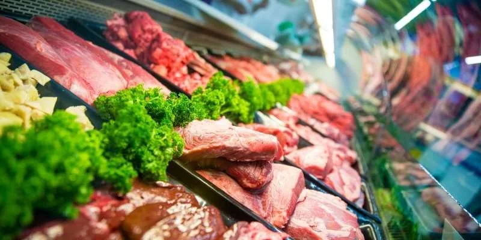
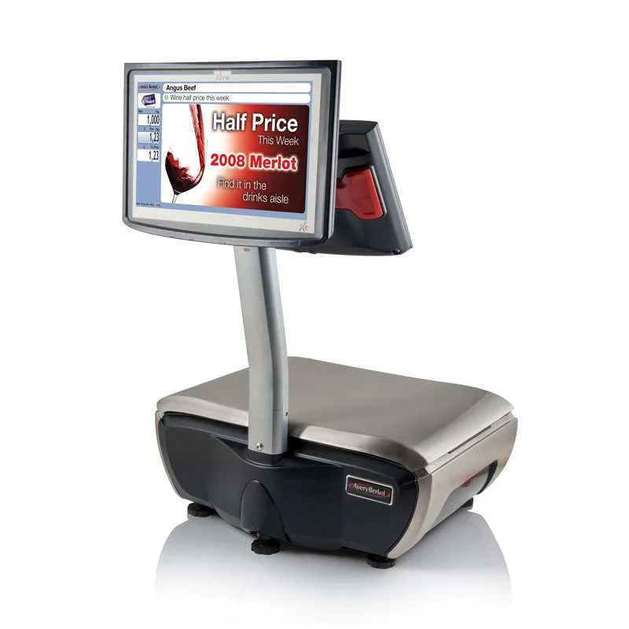
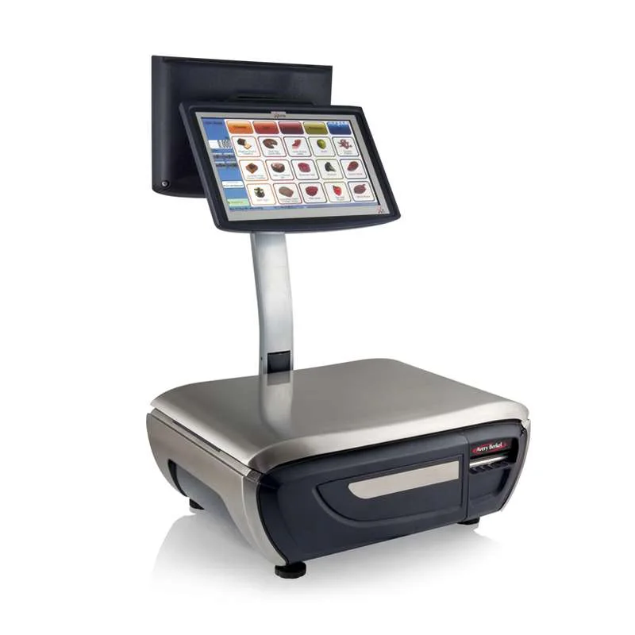

KassaKompas · Slagerijen, viswinkels & traiteurs
Kassasystemen voor slagerijen en viswinkels
Wegen, producten selecteren en de rekening afronden terwijl de volgende klant al klaarstaat. KassaKompas helpt je een kassa kiezen die past bij je toonbank, medewerkers en dagelijkse verkoop.
Persoonlijk advies voor Belgische beenhouwerijen, vishandels en traiteurs.
Overzicht achter de toonbank
Een duidelijke verkoopwerking voor je hele team.
Vleeswaren, verse vis, bereide gerechten of een klantbestelling: je assortiment vraagt een herkenbare artikelindeling en een werkbare bediening. Stem je kassa af op producten per stuk, verkoop op gewicht en de manier waarop je medewerkers klanten helpen.
Van een betaalbare instapkassa tot een uitgebreide professionele opstelling: KassaKompas bekijkt welke apparatuur en kassasoftware vandaag nodig zijn en welke uitbreidingen aansluiten op je plannen.

Wegen en registreren
Een weegoplossing afgestemd op je producten.
Een gekoppelde weegschaal kan de verwerking van gewichtsartikelen ondersteunen. We controleren hoe productkeuze, gewicht en prijs binnen de voorgestelde configuratie samenwerken en welke vereisten gelden voor de beoogde werking.
- Artikelen herkenbaar terugvinden
Een duidelijke indeling voor vlees, vis, charcuterie, bereide gerechten of andere productgroepen. - Stuk- en gewichtsartikelen combineren
Test de verschillende verkoopwijzen met je eigen assortiment. - Passende apparatuur aan je toonbank
Bespreek weegschalen, schermen en printers op basis van de beschikbare ruimte en taakverdeling.
Een winkelweegschaal en kassasysteem moeten als concrete combinatie worden beoordeeld. We bevestigen de mogelijkheden vóór je beslist.
Van bestelling tot betaalmoment
Een logische werkwijze tijdens drukke momenten.
Een bestelling bestaat vaak uit meerdere producten die na elkaar worden gekozen. Bekijk hoe je medewerkers artikelen toevoegen, een wijziging verwerken en de verkoop afronden. Een demonstratie met jouw praktijksituaties maakt de bediening tastbaar.
Medewerkers en toegangsrechten
Bespreek hoe je team zich aanmeldt en welke handelingen ieder mag uitvoeren. Denk aan prijzen aanpassen, correcties maken en rapporten bekijken. De beschikbare aanmeldmethodes en rechten hangen af van de oplossing.
Printers en werkposten
Wil je verschillende printers of verkooppunten inzetten? We bekijken waar informatie nodig is en hoe bonnen en verkopen binnen je werkproces worden verwerkt.
Een helder betaalmoment
Stem contant en elektronisch betalen af op je zaak. Een geschikte betaalintegratie kan manuele bedraginvoer beperken; we controleren de betaalprovider, toestellen en softwareversies.
Ook het bewaren, overnemen of afwerken van een verkoop is een aandachtspunt wanneer meerdere medewerkers aan de toonbank werken. Test die stappen vooraf met je team.
Bekijk betaalterminals en andere koppelingen →Informatie voor je klant
Een klantendisplay als onderdeel van je bediening.
Een passend klantenscherm kan de geregistreerde verkoop zichtbaar maken. Afhankelijk van je display en kassasoftware kunnen ook eigen afbeeldingen of promotionele boodschappen worden weergegeven.
We bespreken schermgrootte, plaatsing en de informatie die je wilt tonen. Kies een opstelling die leesbaar is voor je klant en werkbaar blijft voor de medewerker.
Je schermindeling laten aansluiten op je assortiment
Een logische layout helpt je team om producten terug te vinden. Bespreek welke groepen en sneltoetsen relevant zijn en hoe je artikel- en prijswijzigingen beheert.

Backoffice en administratie
Houd zicht op je verkoop en werkposten.
Welke verkoopoverzichten heb je nodig en wie mag ze bekijken? We onderzoeken de beschikbare rapporten en beheerfuncties, inclusief eventuele toegang op afstand en beheer over meerdere locaties.
Facturatie en boekhouding
We bekijken hoe je facturen verwerkt en of verkoopgegevens naar je boekhoudpakket kunnen worden overgedragen. Welke gegevens uitgewisseld worden, spreken we vooraf af voor de concrete systemen.
Ontdek boekhouding en bedrijfsinzichten →Traiteur en verbruik ter plaatse
Een fiscale inrichting die bij je activiteiten past.
Een slagerij of viswinkel kan naast winkelverkoop ook bereide maaltijden, catering of bediening ter plaatse aanbieden. De eventuele verplichting tot een geregistreerd kassasysteem vraagt een beoordeling van je activiteiten en situatie.
Laat je boekhouder de fiscale inrichting beoordelen. Is een GKS nodig, dan controleren we de vereiste certificering van de voorgestelde kassasoftware en fiscale apparatuur afzonderlijk.
Raadpleeg de officiële Belgische GKS-richtlijnen →Praktische antwoorden
Veelgestelde vragen van slagers en vishandelaars.
Welke kassa past bij mijn slagerij of viswinkel?
Kijk naar je assortiment, verkoop op gewicht, aantal medewerkers en de bestellingen die je verwerkt. KassaKompas helpt je een betaalbare instapkassa of een uitgebreide professionele opstelling afwegen. Test de bediening met producten uit je eigen toonbank.
Kan ik een winkelweegschaal koppelen?
Dat onderzoeken we voor de concrete weegschaal, kassasoftware en gewenste verwerking van gewichtsartikelen. We bespreken ook de vereisten voor het beoogde gebruik. Een weegschaal is geen vanzelfsprekend onderdeel van elk pakket.
Kunnen verschillende medewerkers aan dezelfde kassa werken?
We bekijken hoe je medewerkers zich aanmelden en welke rechten ieder nodig heeft. Afhankelijk van de gekozen oplossing kan identificatie bijvoorbeeld via een code, sleutel of badge verlopen. Ook het overnemen of afronden van verkopen test je best vooraf.
Kan een klantendisplay producten en promoties tonen?
De mogelijkheden hangen af van het display en de kassasoftware. We bekijken welke verkoopinformatie zichtbaar is en of eigen afbeeldingen of promoties getoond kunnen worden, afgestemd op je beschikbare ruimte en gewenste gebruik.
Kan ik facturatie en boekhouding koppelen?
We controleren je facturatieproces, boekhoudpakket en kassasoftware. Daarna spreken we af welke gegevens kunnen worden uitgewisseld en hoe de overdracht verloopt. Niet elke koppeling is standaard beschikbaar.
Heb ik als slager, vishandelaar of traiteur een witte kassa nodig?
Dat hangt af van je activiteiten en de toepasselijke GKS-regels. Winkelverkoop, bereide maaltijden en restaurant- of cateringdiensten vragen een beoordeling van je concrete situatie. Laat je boekhouder de officiële Belgische richtlijnen toepassen op jouw onderneming.
Kan ik meerdere werkposten of vestigingen beheren?
We bespreken welke artikelgegevens, prijzen en rapporten je centraal wilt beheren. Daarna controleren we hoe de gekozen oplossing informatie tussen kassa’s of vestigingen uitwisselt en welke modules of verbindingen nodig zijn.
Wat kost een kassa voor een slagerij of viswinkel?
De kosten hangen af van werkposten, weegschalen, displays, printers, softwaremodules en begeleiding. Vraag een voorstel met duidelijke eenmalige en terugkerende kosten en afspraken over installatie en ondersteuning.
Persoonlijk advies en ondersteuning
Welke kassa past bij jouw slagerij of viswinkel?
Vertel ons over je assortiment, medewerkers en werkposten. KassaKompas helpt je een passende opstelling kiezen en bespreekt inrichting, installatie en ondersteuning.
← Terug naar alle retailsectoren